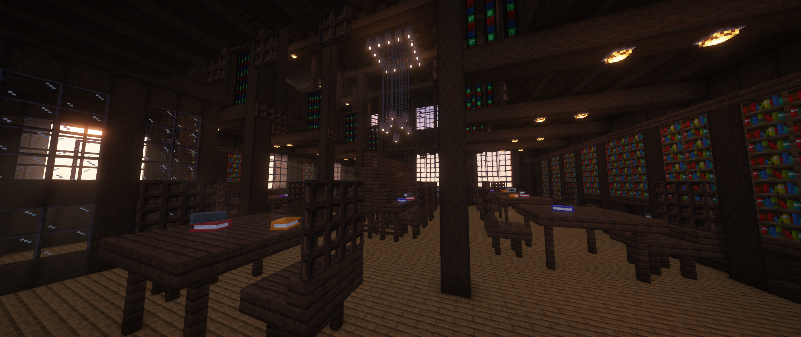
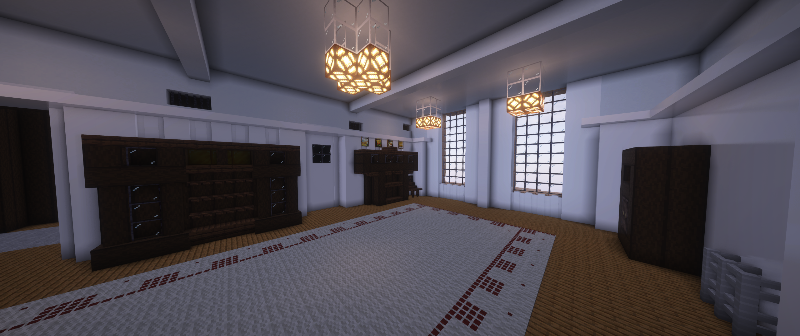
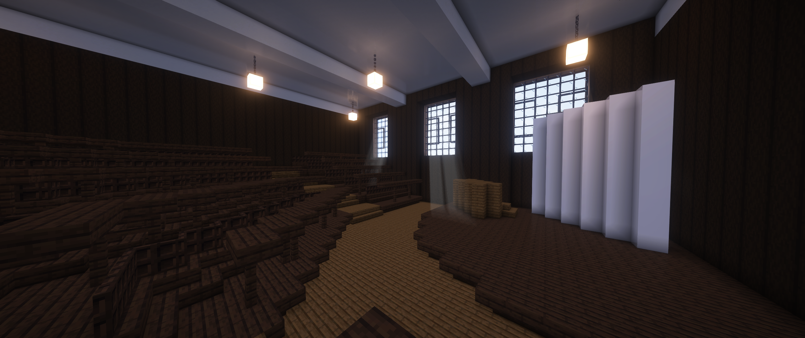
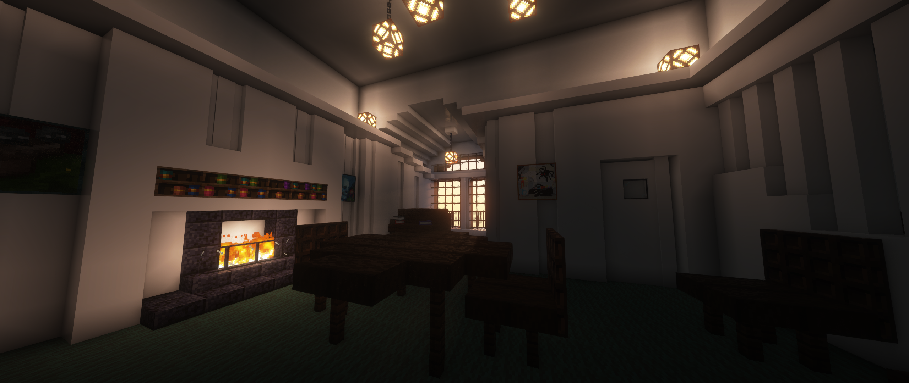

Gallery
Museum

Library

Design Room

Hen Run

Lecture Theatre

Studio

Director's Office

Hallway

Charles Rennie Mackintosh is a world-renowned Scottish artist and architect. This project serves to digitally preserve his magnum-opus, The Mackintosh Building, that tragically burned down twice. Pieced together from blueprints, pictures and videos online, "Mackintosh in Minecraft" aims to breech the barrier between cultural heritage and younger generations through a more interactive and accessible approach to learning and discovery of the people and monuments that are all too often lost to time and tradgedy.
Upon loading into the world users will be greeted with a short tutorial to help familiarize them with Minecraft and how the model is explored. Users are free to explore the model at their own pace, can quickly teleport to the important rooms in the building, or can take the curated tour of the building. Additionally there are many changeable settings to help view the model in a different light.
Information is presented to the user as they discover it, through pop-ups on screen, dialogue in the chat window and lecturns found around the map.